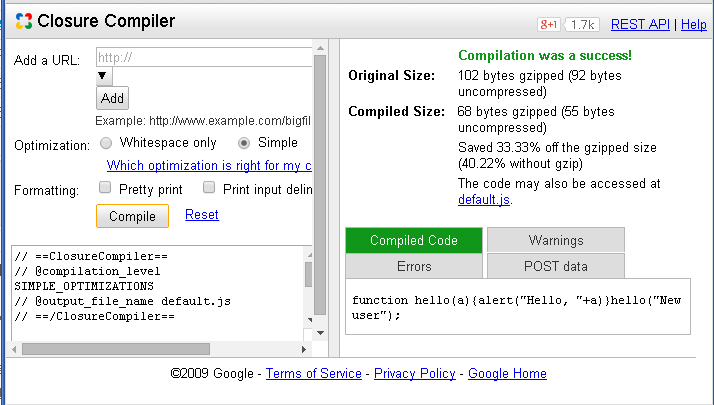
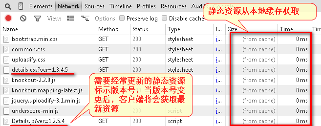
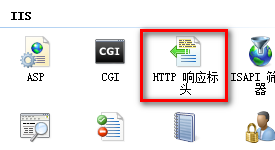
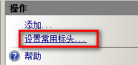
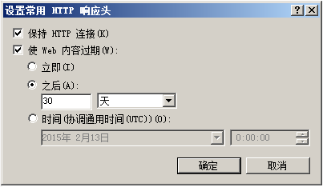

提高网站访问速度的方法汇总
以下方法都有在公司实际项目中应用，的确能够提升客户端体验和访问速度。
1、建议客户端使用Chrome或高版本IE浏览器；
2、能够实现静态化的页面尽量在服务器端保存静态页面，访问动态页面肯定会比静态页面慢。
3、减少HTTP请求
1）合并压缩js、css，可以使用前端自动化构建工具。
例如：grunt（使用说明：http://www.cnblogs.com/wangfupeng1988/p/4561993.html）、gulp 、
很不错的google在线js压缩工具：http://closure-compiler.appspot.com/home

2） 使用精灵图，将一些小图标做成一张图片，再使用CSS进行定位。
3） 使用Iconfont，优点占用资源小，可以和字体一样设置大小和颜色。
推荐两个免费的iconfont下载地址：http://www.flaticon.com http://www.iconfont.cn
4） 移动端页面利用CSS3(圆角、阴影、渐变、透明等)替换不必要图片。
4、使用内容发布系统CDN
将一些访问量较大的静态资源放在CDN服务上，另外国内各大互联网公司都有免费提供常用JS框架。
例如：http://cdn.code.baidu.com/
http://www.bootcdn.cn/
<script src="http://apps.bdimg.com/libs/jquery/2.1.4/jquery.min.js"></script>
<script>window.jQuery || document.write('<script src="js/vendor/jquery-1.9.0.min.js"><\/script>')</script>
5、静态资源客户端缓存
将静态资源（例如：图片、js、css）在客户端进行缓存，该效果非常明显，性能可以提升50%以上。

IIS中设置方法：
1）打开“HTTP响应标头”

2）设置常用标头

3）设置静态内容缓存时间

Apache 设置方法：
具体设置方法可以参照：http://www.maixj.net/wangzhan/shezhiwangyejingtaineironghuancunshijian-1187
开启LoadModule expires_module modules/mod_expires.so模块
然后，在httpd.conf中添加如下内容：
<IfModule mod_expires.c> # enable expirations ExpiresActive On ExpiresDefault A2592000 # expire images after a month in the client's cache ExpiresByType image/gif A2592000 ExpiresByType image/jpg A2592000 ExpiresByType image/jpeg A2592000 ExpiresByType image/png A2592000 # css/js ExpiresByType text/css "access plus 4 weeks" ExpiresByType text/javascript "access plus 4 weeks" # html ExpiresByType text/html "access plus 2 days" </IfModule>
6、Link样式标签应放在Head标签中，否则IE浏览器可能加载时会白屏
7、js文件引用放在页面底部</body>标签内
8、将js和css放到外部文件中，这样通过静态文件缓存，可以有效减少html页面的大小